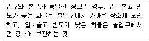
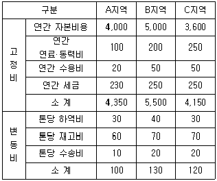
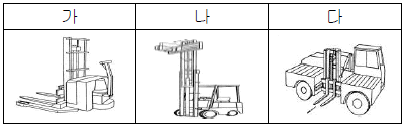
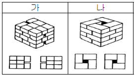
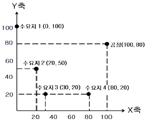
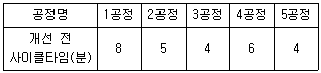
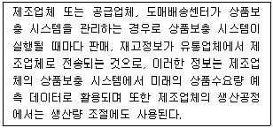
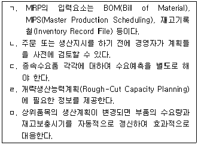
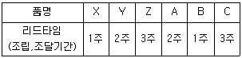

물류관리사-2교시 (2010-08-22 기출문제)
1과목: 보관하역론
1. 보관에 관한 설명으로 옳지 않은 것은?
- 수요와 공급의 완충역할을 수행한다.
- 재화를 물리적으로 보존하고 관리한다.
- 수송과 배송간의 윤활유 역할을 수행한다.
- 물(物)에 대한 시간적 효용과 장소적 효용의 창출을 지원한다.
- 물류활동의 링크(Link)와 링크를 이어주는 노드(Node)의 역할을 수행한다.
(정답률: 알수없음)

2. 하역의 원칙에 관한 설명으로 옳지 않은 것은?
- 지표와의 접점이 클수록 운반활성지수는 높아진다.
- 기계화 할수록 효율성이 높아진다.
- 위에서 아래로 움직일수록 경제적이다.
- 운반을 직선화 할수록 경제적이다.
- 화물을 단위화 할수록 효율성이 높아진다.
(정답률: 70%)
3. 다음에서 설명하는 보관의 원칙은?

- 선입선출의 원칙
- 명료성의 원칙
- 회전대응보관의 원칙
- 동일성 및 유사성의 원칙
- 네트워크 보관의 원칙
(정답률: 알수없음)
4. 포장 표준화의 4대 요소가 아닌 것은?
- 치수의 표준화
- 중량의 표준화
- 강도의 표준화
- 기법의 표준화
- 재료의 표준화
(정답률: 60%)
5. 다음은 물류단지 입지선정을 위한 지역별 물류 관련 비용에 관한 자료이다. 이에 대한 설명으로 옳은 것은?(단위:천원)

- 연간 물동량이 10톤인 경우 총비용면에서 가장 유리한 물류단지는 B지역이다.
- 연간 물동량이 50톤인 경우 총비용면에서 가장 유리한 물류단지는 C지역이다.
- 연간 물동량이 100톤 이상으로 증가할 경우 총 비용면에서 가장 유리한 물류단지는 B지역이다.
- 총비용을 산출할 때 연간 물동량이 많아질수록 중요하게 고려해야 할 것은 고정비 부분이다.
- 연간 물동량이 계속 증가한다고 예측되는 경우 총 비용면에서 가장 유리한 물류단지는 A지역이다.
(정답률: 38%)
6. 다음 그림은 하역ㆍ운반기기이다. 올바르게 짝지어진 것은?

- 가 - 사이드 포크리프트 트럭, 나 - 래터럴 스태킹 트럭, 다 - 오더피킹 트럭
- 가 - 래터럴 스태킹 트럭, 나 - 스트래들 포크리프트, 다 - 사이드 포크리프트 트럭
- 가 - 스트래들 포크리프트, 나 - 사이드 포크리프트 트럭, 다 - 래터럴 스태킹 트럭
- 가 - 오더피킹 트럭, 나 - 래터럴 스태킹 트럭, 다 - 사이드 포크리프트 트럭
- 가 - 스트래들 포크리프트, 나 - 래터럴 스태킹 트럭, 다 - 사이드 포크리프트 트럭
(정답률: 알수없음)
7. 피킹(Picking)시 피커(Picker)를 고정시키고 보관선반 자체를 수평 또는 수직으로 순환하여 이동시키는 랙(Rack)은?
- 선반(Shelves)
- 회전 랙(Carousel)
- 흐름 랙(Flow Rack)
- 고층 랙(High Stack Rack)
- 드라이브 인 랙(Drive-in Rack)
(정답률: 알수없음)
8. 물류단지의 입지선정을 위해 어떤 물량이 어느 경로로 흐르고 있는가를 과거에서부터 현재까지의 경향을 파악하는 분석기법은?
- P-Q분석
- R분석
- SWOT분석
- ABC분석
- S-T분석
(정답률: 60%)
9. 다음 파렛트 적재방법을 올바르게 연결한 것은?

- 가 - 스플릿 적재, 나 - 핀휠 적재
- 가 - 블록 적재, 나 - 핀휠 적재
- 가 - 벽돌 적재, 나 - 블록 적재
- 가 - 벽돌 적재, 나 - 스플릿 적재
- 가 - 스플릿 적재, 나 - 교호열 적재
(정답률: 70%)
10. 하역 용어에 관한 설명으로 옳지 않은 것은?
- 배닝(Vanning)은 컨테이너에 화물을 싣는 것이다.
- 운반(Carrying)은 화물을 비교적 단거리로 이동시키는 것이다.
- 래싱(Lashing)은 각목, 판재 등을 사용하여 화물을 움직이지 않도록 고정하는 것이다.
- 디배닝(Devanning)은 컨테이너로부터 화물을 내리는 것이다.
- 더니지(Dunnage)는 운송 도중에 화물이 손상되지 않도록 화물의 밑바닥이나 틈 사이를 깔거나 끼우는 물건이다.
(정답률: 64%)
11. 컨테이너 전용터미널에서 사용되는 하역 또는 이송장비가 아닌 것은?
- 언로더(Unloader)
- 갠트리 크레인(Gantry Crane)
- 트랜스퍼 크레인(Transfer Crane)
- 리치 스태커(Reach Stacker)
- 탑 핸들러(Top Handler)
(정답률: 60%)
12. 화물의 취급표시(화인) 방법에 관한 설명으로 옳지 않은 것은?
- 레이블링(Labeling)은 종이나 직포 등에 필요한 내용을 미리 인쇄해 두었다가 일정한 위치에 붙이는 것으로 통조림병, 유리병 등에 적용된다.
- 스탬핑(Stamping)은 고무인이나 프레스기를 사용하여 찍는 방법으로 종이상자, 골판지상 자 등에 적용된다.
- 카빙(Carving)은 금속제품에 사용하며, 못으로 박거나 특정 방법에 의해 고정시키는 방법이다.
- 태그(Tag)는 종이, 플라스틱판 등에 표시내용을 기재한 후 철사, 끈 등으로 매다는 방법이다.
- 스텐실(Stencil)은 시트에 문자를 파두었다가 붓, 스프레이 등으로 칠하는 방법으로 나무상자, 드럼 등에 적용된다.
(정답률: 알수없음)
13. 컨테이너의 종류에 관한 설명으로 옳지 않은 것은?
- 일반용도 컨테이너(Dry Container) : 온도 조절이 필요 없는 일반잡화를 운송하기 위한 컨테이너
- 냉동 컨테이너(Reefer Container) : 과일, 야채 등의 보냉이 필요한 화물을 운송하기 위한 컨테이너
- 플랫 랙 컨테이너(Flat Rack Container) : 승용차, 기계류 등과 같은 중량화물을 운송하기 위한 컨테이너
- 가축용 컨테이너(Pen Container) : 가축사료, 몰드, 소맥분 등과 같은 화물을 운송하기 위한 컨테이너
- 통기ㆍ환기 컨테이너(Ventilated Container) : 통풍을 필요로 하는 수분성 화물, 생피 등을 운송하기 위한 컨테이너
(정답률: 70%)
14. 파렛트 풀 시스템(PPS : Pallet Pool System)의 운영방식 중 교환방식의 장ㆍ단점에 관한 설명으로 옳지 않은 것은?
- 파렛트의 즉시 교환사용이 원칙으로 분실과 회수의 어려움이 없다.
- 관계 당사자는 언제나 교환에 응할 수 있는 파렛트를 준비하여야 한다.
- 보수가 필요하게 된 파렛트나 품질이 나쁜 파렛트를 교환용으로 내놓을 경우가 있다.
- 대여회사의 데포(Depot)에서 하주까지의 공(Empty) 파렛트 수송이 필요하다.
- 수송기관의 이용이 복잡하거나 수송기관의 수가 많을 경우에는 원활하게 진행할 수 없다.
(정답률: 알수없음)
15. 다음 그림은 새로운 배송센터를 설립하려는 회사의 공장과 수요지를 나타낸 것이다. 수요지1과 수요지2의 수요량은 각각 15톤/월이며, 수요지3과 수요지4의 수요량은 각각 20톤/월이다. 이때 무게중심법을 이용하여 구한 배송센터의 최적 입지의 좌표(X, Y)는? (단, 소수점이하 둘째자리에서 반올림)

- X = 37.5, Y = 62.5
- X = 37.5, Y = 66.5
- X = 59.8, Y = 62.5
- X = 67.9, Y = 61.8
- X = 67.9, Y = 66.5
(정답률: 58%)
16. 집중구매의 장점에 관한 설명으로 옳지 않은 것은?
- 자주적 구매가 가능하고 사업장 특수요구가 반영된다.
- 자재 수입 등 절차가 복잡한 구매에 유리하다.
- 시장조사나 거래처의 조사, 구매효과의 측정 등이 유리하다.
- 대량구매로 가격과 거래 조건이 유리하다.
- 공통자재의 표준화, 단순화가 가능하며 재고를 줄일 수 있다.
(정답률: 72%)
17. 물류단지에 관한 설명으로 옳지 않은 것은?
- 물류단지에서 사용하는 자동인식시스템의 대표적인 사례는 바코드, 무선 태그, RFID, 머신비전(Machine Vision) 등이다.
- 창고관리시스템(WMS)은 물류단지 내의 업무와 정보를 총괄하며 설비제어시스템을 통제하는 물류단지의 핵심기능이다.
- 물류단지에 필요한 기본설비는 입ㆍ출고장, 입ㆍ출고 설비 및 기계, 보관 관련 설비, 하역용 기기 및 비품, 사무실, 후생시설 등이다.
- 물류단지의 입지선정방법은 총비용비교법, 손익분기도표법, EOQ 모형 등이다.
- 물류단지 시스템 기본설계항목은 입지선정, 시설배치, 격납구분, 시스템 흐름(Flow)과 매뉴얼 작성 등이다.
(정답률: 70%)
18. 물류단지시설에 관한 설명으로 옳은 것은?
- DP(Depot) : 재고품의 보관거점으로 상품의 배송거점인 동시에 예상수요에 대한 보관거점을 의미하며 일명 하치장이라 부른다.
- ICD(Inland Container Depot) : 산업단지와 항만 사이를 연결하여 화물의 유통을 원활히 하기 위한 대규모 물류단지이다.
- CY(Container Yard) : LCL(Less than Container Load) 화물을 모아서 FCL(Full Container Load)화물로 만드는 취급장이다.
- SP(Stock Point) : 수송을 효율적으로 하기 위해 갖추어진 집배중계지 및 배송처에 컨테이너가 CY에 반입되기 전 야적된 상태에서 컨테이너를 적재하는 장소이다.
- CFS(Container Freight Station) : 컨테이너 보세장치장, 마샬링 야드 등을 의미한다.
(정답률: 알수없음)
19. 물류터미널의 역할로 옳지 않은 것은?
- 수송비와 생산비의 절충 역할
- 수요와 공급의 조절 역할
- 제조 공정의 일부로서의 역할
- 마케팅지원의 역할
- 재고분산에 따른 재고비용 감축 역할
(정답률: 알수없음)
20. 어떤 집배송센터의 집하작업에서 연속된 5개 공정별 사이클타임은 다음 표와 같다. 공정개선 후, 1공정의 사이클타임을 50% 줄일 수 있었다. 개선 후의 애로공정명, 애로공정의 사이클타임, 공정효율(Balance Efficiency)은 각각 얼마인가? (단, 소수점이하 둘째자리에서 반올림)

- 2공정, 5분, 67.5%
- 4공정, 5분, 67.5%
- 2공정, 6분, 76.7%
- 4공정, 6분, 76.7%
- 4공정, 4분, 67.5%
(정답률: 60%)
21. 하역합리화 기본원칙 중 활성화 원칙에서 운반 활성지수가 '4'인 화물의 상태를 나타낸 것은? (단, 운반활성지수는 0 ~ 4 임)
- 대차 위에 놓여 있는 상태
- 파렛트 위에 놓여 있는 상태
- 컨베이어 위에 실려 있는 상태
- 바닥에 놓여 있는 상태
- 상자에 들어 있는 상태
(정답률: 알수없음)
22. 재고관리의 지연(Postponement)전략에 관한 설명으로 옳지 않은 것은?
- 지연전략은 고객 요구사항을 지연시켜 고객서비스 향상에 장애요인이 된다.
- 구매자의 요구사항 다양화 및 설계변경 등으로 인한 경영기회 손실을 최소화 한다.
- 유통가공이 이루어지지 않는 기본적인 부품 및 반제품을 보유할 필요가 있다.
- 실제 수요가 인지될 때까지 포장 또는 라벨작업 등을 지연시켜 위험을 최소화 한다.
- 지연전략에는 최종조립, 부분가공 등의 유통가공 기능을 포함한다.
(정답률: 60%)
23. TOFC(Trailer on Flat Car)에 관한 설명으로 옳지 않은 것은?
- TOFC는 화물을 적재한 트레일러를 화물과 함께 적재하는 철도하역 방식이다.
- 피기백(Piggy Back) 방식은 화물적재의 단위가 클수록 편리하다.
- 플랙시 밴(Flexi-van) 방식은 TOFC 하역방식 중에서 기동성이 가장 우수하다.
- 정기적으로 운행하는 컨테이너 운송으로 프레이트 라이너(Freight Liner) 방식이 있다.
- 캥거루 방식은 터널의 높이나 차량높이의 제한이 있게 될 경우 피기백 방식보다 높이가 낮아 유리하다.
(정답률: 64%)
24. 화물을 일정한 표준의 중량 또는 체적으로 단위화시켜 일괄적으로 기계를 이용하여 하역, 수송하는 시스템은?
- 파렛트 풀 시스템
- 파렛트 푸시 시스템
- 오더피킹 시스템
- 유닛로드 시스템
- 컨베이어 시스템
(정답률: 64%)
25. 창고관리시스템(WMS : Warehouse Management System)에 관한 설명으로 옳은 것은?
- WMS를 도입하면 물류 프로세스의 표준화 과정없이 물류센터의 효율을 극대화 시킬 수 있다.
- WMS는 운영계획, 수요예측, 조달계획, 배송계획 등을 수립하여 전체 물류센터의 효율화를 추구한다.
- WMS는 물류센터 운영 효율에 초점을 두고 있기 때문에 재고 부담을 최소화하거나 재고 비용을 절감시키는 효과는 크지 않다.
- WMS 도입으로는 무재고로 표현되는 크로스 도킹(Cross Docking)을 실현시키지 못한다.
- WMS는 업무적인 측면과 고객 서비스 측면에서는 높은 효과가 있지만, 투자비용 측면에서는 효과를 기대하기 어렵다.
(정답률: 54%)
26. 창고 운영형태별 장ㆍ단점에 관한 설명으로 옳지 않은 것은?
- 자가창고는 기계화 설비를 도입하여 생력화하는 데에 유리하다.
- 자가창고는 계절적 수요 변동에 탄력적으로 대응할 수 있다.
- 영업창고를 이용하면 비용 지출이 명확해지는 장점이 있다.
- 영업창고를 이용하면 입지 선정이 용이하다.
- 리스창고를 이용하면 낮은 임대요율로 보관 공간을 확보할 수 있지만 보관장소를 탄력적으로 운용하는 것이 어렵다.
(정답률: 55%)
27. A제품의 2009년도 기초재고량은 2,000개이고 기말재고량은 1,000개이다. 이 제품의 개당 구매가격은 1,000원이고, 연간 단위당 재고유지비는 구매가격의 2%이다. 이때 연간 재고유지비용은? (단, 재고보충은 없고 수요는 일정)
- 20,000원
- 30,000원
- 40,000원
- 50,000원
- 60,000원
(정답률: 70%)
28. 다음은 무엇에 관한 설명인가?

- TMS(Transportation Management System)
- POS(Point Of Sales)
- VMI(Vendor Managed Inventory)
- MPS(Master Production Scheduling)
- CPT(Carriage Paid To)
(정답률: 알수없음)
29. 크로스 도킹(Cross Docking) 시스템이 가장 효율적으로 운영될 수 있는 경우는?
- 제품의 수요가 일정하고 안정적이며, 재고품절비용이 높을 경우
- 제품의 수요가 일정하고 안정적이며, 재고품절비용이 낮을 경우
- 제품의 수요가 불확실하며, 재고품절비용이 높을 경우
- 제품의 수요가 불확실하며, 재고품절비용이 낮을 경우
- 모든 경우 크로스 도킹 시스템은 유용하다.
(정답률: 알수없음)
30. 다수의 피커(Picker)가 제각기 분담한 작업범위를 정해두고 피킹(Picking) 전표에서 자신이 담당하는 물품만을 골라 피킹하는 방법은?
- 단일 주문 피킹(Single Order Picking)
- 이중 주문 피킹(Double Order Picking)
- 배치 주문 피킹(Batch Order Picking)
- 총량 주문 피킹(Total Order Picking)
- 존 주문 피킹(Zone Order Picking)
(정답률: 75%)
31. 자동분류 컨베이어 방식 중 화물이 진행하는 방향에 대해 컨베이어 위에 비스듬히 놓인 암(Arm)을 이용하여 물품을 분류하는 방식은?
- 푸셔(Pusher) 방식
- 크로스벨트(Cross-Belt) 방식
- 다이버터(Diverter) 방식
- 슬라이딩슈(Sliding-Shoe) 방식
- 경사트레이(Tilted Tray) 방식
(정답률: 알수없음)
32. 자동창고시스템의 구성 요소로 옳지 않은 것은?
- 스태커 크레인(Stacker Crane)
- 트레버서(Traverser)
- 랙(Rack)
- 대기점(Home Position)
- 스트래들 캐리어(Straddle Carrier)
(정답률: 알수없음)
33. 로케이션 관리방법 중에서 일정한 범위(위치)를 한정하여 특정 품목군을 보관하되, 그 범위내에서는 위치를 자유롭게 선택하는 방식은?
- 프리 로케이션(Free Location)
- 고정 로케이션(Fixed Location)
- 임의 로케이션(Random Location)
- 할당 로케이션(Dedicated Location)
- 구역 로케이션(Zone Location)
(정답률: 알수없음)
34. 운반관리(Material Handling)에 관한 설명으로 옳지 않은 것은?
- 운반의 4요소는 동작, 시간, 수량, 공간이다.
- 운반관리는 그 형상을 불문하고 모든 물질의 이동, 포장, 저장에 관한 기술과 과학을 말한다.
- 운반관리는 제조공정 및 검사공정을 포함하지 않는다.
- 운반관리의 주안점은 직선의 흐름, 계속적인 흐름, 최소의 노력과 시간, 작업의 분산화, 생산작업 극대화 등이다.
- 운반작업 개선의 원칙으로 노동 단축, 거리 단축, 기계화 등이 있다.
(정답률: 30%)
35. 수요예측기법에 관한 설명으로 옳지 않은 것은?
- 단순이동평균법은 6~12개월간의 안정적인 자료를 기반으로 단기 예측값을 구하는데 유용하다.
- 지수평활법은 과거의 정보 보다는 최근의 정보에 더 많은 가중치를 가지고 예측값을 구하는 방법이다.
- 회귀분석은 인과형 예측에 유용한 방법이다.
- 추세지수평활법은 지수평활법에 추세효과인 평활상수를 고려하여 예측값을 구하는 방법이다.
- 가중이동평균법은 과거의 모든 자료에 동일한 가중치를 부여하여 예측값을 구하는 방법이다.
(정답률: 70%)
36. 다음 중 MRP(Material Requirement Planning)에 관한 설명으로 옳은 것을 모두 선택한 것은?

- ㄱ, ㄷ, ㄹ
- ㄴ, ㄷ, ㅁ
- ㄱ, ㄴ, ㅁ
- ㄱ, ㄷ, ㅁ
- ㄴ, ㄹ, ㅁ
(정답률: 60%)
37. A창고의 1일 제품출하량은 정규분포를 따르며, 그 평균은 150개, 표준편차는 10개이다. 이 때 제품주문 후 창고에 보충되기 위한 조달기간은 9일이다. A창고에서의 서비스율을 90%로 유지하고자 할 때 재주문점은? (단, Z(0.90)=1.282, Z(0.95)=1.645 이며, 소수점이하는 올림)
- 1,350개
- 1,389개
- 1,400개
- 1,466개
- 1,499개
(정답률: 55%)
38. 자동차 부품공장에서 하루 100개의 부품을 생산하고 있다. 이를 위한 생산준비비용은 1회당 50,000원이고, 연평균 보관비가 단위당 5,000원 이며 연간 수요량은 10,000개이다. 연간 작업일수를 250일 이라 할 때 경제적 생산량(EPQ)은? (단, √2 = 1.414, √3 = 1.732, √5 = 2.236 이며, 소수점이하는 올림)
- 578개
- 622개
- 674개
- 725개
- 753개
(정답률: 50%)
39. 제품 X는 2개의 부품 Y와 3개의 부품 Z로 조립된다. 이때, 부품 Y는 1개의 부품 A와 2개의 부품 B로 조립되고, 부품 Z는 2개의 부품 A와 4개의 부품 C로 조립된다. 각 제품 및 부품의 리드타임이 아래 표와 같을 때, 제품 X가 10주차에 100개가 필요하다면 부품 C를 몇 주차에 몇 개를 주문해야 하는가? (단, 제품 X 및 각 부품의 초기재고는 없음)

- 2주차, 600개
- 3주차, 400개
- 3주차, 1,200개
- 6주차, 300개
- 7주차, 1,200개
(정답률: 70%)
40. JIT(Just in Time)를 도입하여 운영하고 있는 A작업장의 부품 수요는 1분당 7개이고, 각 용기당 35개의 부품을 담을 수 있다. 용기의 순환시간이 50분 일 때, 필요한 용기 수와 최대 재고수준은?
- 용기 수 - 5개, 최대 재고수준 - 300개
- 용기 수 - 5개, 최대 재고수준 - 350개
- 용기 수 - 7개, 최대 재고수준 - 300개
- 용기 수 - 7개, 최대 재고수준 - 350개
- 용기 수 - 10개, 최대 재고수준 - 350개
(정답률: 50%)
2과목: 물류관련법규
41. 물류정책기본법령상 내용으로 옳은 것은?
- 국가는 지역물류에 관한 정책 및 계획을 수립하고 시행하여야 한다.
- 화주는 물류체계의 효율성을 증진시키기 위한 노력을 할 책무는 없다.
- 물류에 관한 다른 법률을 제정하는 경우에는 이 법의 목적과 물류정책의 기본이념에 맞도록 하여야 한다.
- 이 법은 유통산업의 효율적인 진흥과 균형있는 발전을 도모하고 국민경제의 발전에 이바지함을 목적으로 한다.
- 국가물류기본계획은 국토기본법과 관련이 없다.
(정답률: 알수없음)
42. 물류정책기본법령상 종합물류기업의 인증에 관한 설명으로 옳은 것은?
- 주무부장관은 인증종합물류기업에 인증서를 교부하고, 인증을 나타내는 표시를 제정하여 인증종합물류기업이 사용하게 할 수 있다.
- 종합물류기업으로 인증받은 경우에도 인증당시의 요건을 유지하는지에 대하여 3년마다 정기적으로 점검을 할 수 있다.
- 인증종합물류기업이 거짓이나 그 밖의 부정한 방법으로 인증을 받은 경우에는 주무부장관이 그 인증을 취소할 수 있다.
- 인증센터의 지정과 조직 및 운영에 필요한 사항은 국토해양부령으로 정한다.
- 자동차ㆍ선박ㆍ항공기등 운송수단을 가진 화물운송업자로서 물류터미널과 창고를 보유하는 경우에는 종합물류기업 인증을 받을 수 있다.
(정답률: 알수없음)
43. 물류정책기본법령상 물류시설분과위원회의 심의를 거쳐야 하는 사항이 아닌 것은?
- 국토해양부장관이 정부출연연구기관을 국가물류통합데이터베이스를 구축ㆍ운영할 자로 지정하는 경우
- 국토해양부장관이 종합물류정보망사업자의 지정을 취소하는 경우
- 국토해양부장관이 전기통신사업법에 따른 전기통신사업자 중 물류정책기본법령에서 정하는 자를 종합물류정보망을 구축ㆍ운영할 자로 지정하는 경우
- 국토해양부장관이 종합물류정보망사업자의 지정신청을 받기 위하여 심사기준 등을 정할 때
- 국토해양부장관이 물류표준화에 관한 업무를 효과적으로 추진하기 위하여 한국산업규격의 제정ㆍ개정 또는 폐지를 요청할 때
(정답률: 알수없음)
44. 물류정책기본법령상 국제물류주선업자에 대하여 국토해양부장관의 처분으로 옳은 것은?
- 다른 사람에게 자기의 성명 또는 상호를 사용하여 영업을 하게 하거나 등록증을 대여한 때에는 사업정지 30일
- 등록기준에 못 미치게 된 경우, 2차 위반 시에는 사업정지 60일
- 등록기준에 못 미치게 된 경우, 4차 위반 시에는 등록취소
- 거짓이나 그 밖의 부정한 방법으로 등록한 경우에는 사업정지 120일
- 등록의 결격사유에 해당하면 사업정지 90일
(정답률: 40%)
45. 물류정책기본법령상 물류관련협회에 관한 설명으로 옳은 것은?
- 물류관련협회를 설립하려는 경우 해당 협회의회원 1/5 이상이 발기인으로 정관을 작성하여 해당 협회의 회원 1/3 이상이 참여한 창립총회의 의결을 거쳐야 한다.
- 물류관련협회는 국토해양부장관의 설립인가를 받음으로써 성립한다.
- 물류관련협회의 설립인가 신청서에는 자본금 또는 자산평가액을 증명하는 서류를 첨부하여야 한다.
- 물류관련협회의 업무 및 정관에 필요한 사항은 국토해양부령으로 정한다.
- 해당사업의 진흥ㆍ발전에 필요한 통계의 작성ㆍ관리와 외국자료의 수집ㆍ조사ㆍ연구사업은 물류관련협회의 업무에 속한다.
(정답률: 알수없음)
46. 물류정책기본법령상 국제물류주선업협회의 정관에 포함되어야 할 사항으로 옳지 않은 것은?
- 설립에 관한 사항
- 해산에 관한 사항
- 총회에 관한 사항
- 임원에 관한 사항
- 업무에 관한 사항
(정답률: 20%)
47. 물류정책기본법령상 종합물류정보망을 구축ㆍ운영할 자로 지정받을 수 있는 자 중 대통령령으로 정하고 있는 공공기관이 아닌 것은?
- 인천국제공항공사
- 한국수자원공사
- 한국도로공사
- 한국철도공사
- 한국토지주택공사
(정답률: 50%)
48. 물류정책기본법령상 국제물류주선업의 사업승계 및 휴지ㆍ폐지에 관한 설명으로 옳지 않은 것은?
- 사업의 전부 또는 일부를 휴지ㆍ폐지하려는 경우에는 미리 국토해양부장관에게 신고하여야 한다.
- 사업의 등록에 따른 권리ㆍ의무를 승계한 자는 국토해양부령으로 정하는 바에 따라 국토해양부장관에게 신고하여야 한다.
- 법인의 합병신고서의 첨부서류에는 합병당사자인 법인의 최근 1년 이내의 사업용고정자산의 명세서가 포함된다.
- 사업을 폐지하려는 자가 법인인 경우에는 폐지신고서에 사업폐지에 관한 법인의 의사결정을 증명하는 서류를 첨부하여야 한다.
- 법인의 합병외의 사유로 해산 신고를 하려는 자는 해산한 날부터 15일 이내에 해산신고서를 국토해양부장관에게 제출하여야 한다.
(정답률: 알수없음)
49. 물류시설의 개발 및 운영에 관한 법령상 물류단지 안에 설치되는 지원시설에 해당될 수 있는 것은?
- 농수산물유통 및 가격안정에 관한 법률에 따른 농수산물산지유통센터(축산물의 도축ㆍ가공ㆍ보관 등을 하는 축산물 종합처리시설 포함)
- 축산물가공처리법의 작업장
- 산림조합법에 따른 조합이 설치하는 구매사업 또는 판매사업 관련 시설
- 화물자동차 운수사업법의 화물자동차운수사업에 이용되는 차고, 화물취급소, 그 밖에 화물의 처리를 위한 시설
- 약사법의 의약품 도매상의 창고 및 영업소시설
(정답률: 50%)
50. 물류시설의 개발 및 운영에 관한 법령상 물류터미널사업의 등록에 관한 설명으로 옳지 않은 것은?
- 복합물류터미널사업을 경영하려는 자는 국토해양부령으로 정하는 바에 따라 국토해양부장관에게 등록하여야 한다.
- 복합물류터미널사업의 등록을 하려는 자는 주차장, 화물취급장, 창고 또는 배송센터를 갖추어야 한다.
- 복합물류터미널사업의 등록기준 중 부지 면적은 100만 제곱미터 이상이어야 한다.
- 복합물류터미널사업을 경영하려는 자는 물류시설개발종합계획 및 물류정책기본법의 국가 물류기본계획상의 물류터미널의 개발 및 정비계획 등에 배치되지 않도록 등록기준을 갖추어야 한다.
- 복합물류터미널사업 등록의 취소처분을 받은 후 2년이 지나지 아니한 자는 복합물류터미널사업의 등록을 할 수 없다.
(정답률: 59%)
51. 물류시설의 개발 및 운영에 관한 법령상 물류단지의 지정에 관한 설명으로 옳지 않은 것은?
- 시ㆍ도지사가 지정할 수 있는 물류단지 규모의 기준은 3만3천 제곱미터 이하이다.
- 국토해양부장관은 물류단지를 지정하려는 때에는 물류단지개발계획을 수립하여 관할 시ㆍ도지사의 의견을 듣고 관계 중앙행정기관의장과 협의한 후 물류시설분과위원회의 심의를 거쳐야 한다.
- 시ㆍ도지사는 물류단지를 지정하려는 때에는 물류단지개발계획을 수립하여 관계 행정기관의 장과 협의한 후 지역물류정책위원회의 심의를 거쳐야 한다.
- 물류단지개발계획을 수립할 때까지 물류단지개발사업의 시행자가 확정되지 아니한 경우에는 물류단지의 지정 후에 이를 물류단지개발계획에 포함시킬 수 있다.
- 물류단지개발계획에는 재원조달계획이 포함되어야 한다.
(정답률: 30%)
52. 물류시설의 개발 및 운영에 관한 법령상 국토해양부장관이 물류단지개발지침을 작성할 때, 시ㆍ도지사의 의견을 듣고 관계중앙기관의 장과 협의한 후 심의를 거쳐야 하는 곳은?
- 국제물류분과위원회
- 국가물류정책위원회
- 지역물류정책위원회
- 물류시설분과위원회
- 물류정책분과위원회
(정답률: 알수없음)
53. 물류시설의 개발 및 운영에 관한 법령상 물류단지지정의 해제에 관한 설명으로 옳지 않은 것은?
- 물류단지로 지정ㆍ고시된 날부터 5년 이내에 그 물류단지의 전부 또는 일부에 대하여 물류단지개발실시계획의 승인을 신청하지 아니하면 그 기간이 지난 다음 날 해당 지역에 대한물류단지의 지정이 해제된 것으로 본다.
- 물류단지지정권자는 물류단지의 전부 또는 일부에 대한 개발 전망이 없게 된 경우에는 대통령령으로 정하는 바에 따라 해당 지역에 대한 물류단지 지정의 전부 또는 일부를 해제할 수 있다.
- 물류단지지정권자는 개발이 완료된 물류단지가 준공된 지 20년 이상 된 것으로서 주변상황과 물류산업여건이 변화되어 물류단지재정비사업을 하더라도 물류단지 기능수행이 어려울 것으로 판단되는 경우에는 대통령령으로 정하는 바에 따라 해당 지역에 대한 물류단지 지정의 전부 또는 일부를 해제할 수 있다.
- 물류단지의 지정으로 국토의 계획 및 이용에 관한 법률에 따른 용도지역이 변경ㆍ결정된 후 물류단지의 개발이 완료되어 물류단지의 지정이 해제된 경우에는 해당 물류단지에 대한 용도지역은 변경ㆍ결정되기 전의 용도지역으로 환원된다.
- 물류단지지정권자는 물류단지의 지정을 해제하려는 경우에는 해제 사유 및 내역, 국토의 계획 및 이용에 관한 법률에 따른 용도지역의 환원에 관한 사항을 명시하여 관계 행정기관의 장과 협의하여야 한다.
(정답률: 알수없음)
54. 물류시설의 개발 및 운영에 관한 법령상 물류단지개발사업의 시행자가 개발한 토지ㆍ시설 등을 분양 또는 임대하는 경우 분양가격의 결정과 임대료 산정기준에 관한 설명으로 옳지 않은 것은?
- 대규모점포, 전문상가단지 등 판매를 목적으로 사용될 토지ㆍ시설 등의 분양가격은 생활대책에 필요하여 대체 공급하는 경우를 제외하고 부동산 가격공시 및 감정평가에 관한 법률에 따른 감정평가액을 예정가격으로 하여 실시한 경쟁입찰에 따라 정할 수 있다.
- 임대하려는 토지ㆍ시설 등의 최초의 임대료는 부동산 가격공시 및 감정평가에 관한 법률에 따라 산정한 개별공시지가에 임대계약 체결일 현재 계약기간 1년의 정기예금이자율(지방은행을 제외한 시중은행의 어음대출금리수준을 말함)을 곱한 금액으로 한다.
- 시행자는 준공인가 전에 물류단지시설용지를 분양한 경우에는 해당 물류단지개발사업을 위하여 투입된 총사업비 및 적정이윤을 기준으로 준공인가 후에 분양가격을 정산할 수 있다.
- 적정이윤은 이 법령에 의하여 산정한 조성원가에서 자본비용, 개발사업대행비용, 선수금을 각각 제외한 금액의 100분의 5를 초과하지 아니하는 범위에서 해당 물류단지의 입주 수요와 지역 간 균형발전의 촉진 등 지역 여건을 고려하여 시행자가 정한다.
- 시행자는 지역여건 및 해당 물류단지시설용지 등의 분양실적 등을 감안하여 임대요율을 5퍼센트의 범위에서 늘리거나 줄일 수 있다.
(정답률: 알수없음)
55. 물류시설의 개발 및 운영에 관한 법령상 물류단지개발사업의 시행자가 지방공기업법에 따른 지방공사인 경우, 조성하는 용지를 이용하려는 자로부터 선수금을 받기 위하여 갖추어야 하는 요건은?
- 실시계획 승인을 받은 사업시행 토지면적의 100분의 30 이상의 토지에 대한 소유권을 확보하고 물류단지개발사업을 위한 건설공사에 착수할 것
- 분양하려는 토지에 대한 소유권을 확보하고 해당 토지에 설정된 저당권을 말소하였을 것
- 분양하려는 토지에 대한 개발사업의 공사 진척률이 100분의 10 이상에 달하였을 것
- 분양계약을 이행하지 아니하는 경우 선수금의 환불을 담보하기 위하여 보증금액이 선수금에 그 금액에 대한 보증 또는 보험기간에 해당하는 약정이자 상당액을 더한 금액 이상으로 한다는 내용이 포함된 보증서 등을 물류단지지정권자에게 제출할 것
- 분양계약을 이행하지 아니하는 경우 선수금의 환불을 담보하기 위하여 보증기간의 개시일은 선수금을 받은 날 이전이어야 하며, 종료일은 준공일부터 30일 이상 지난 날이라는 내용이 포함된 보증서 등을 물류단지지정권자에게 제출할 것
(정답률: 알수없음)
56. 물류시설의 개발 및 운영에 관한 법령상 물류단지의 관리기관에 관한 설명으로 옳지 않은 것은?
- 물류단지는 입주기업체협의회가 관리한다.
- 입주기업체협의회가 구성되기 전에는 시행자가 물류단지를 관리할 수 있다.
- 입주기업체협의회는 해당 물류단지 입주기업체 3분의 2 이상이 회원으로 가입되어 있어야한다.
- 입주기업체협의회는 매 사업연도 개시일부터 2개월 이내에 정기총회를 개최하여야 하며, 필요한 경우에는 임시총회를 개최할 수 있다.
- 입주기업체협의회의 회의는 정관에 다른 규정이 있는 경우를 제외하고는 회원 과반수의 출석과 출석회원 과반수의 찬성으로 의결한다.
(정답률: 알수없음)
57. 화물자동차 운수사업법령상 화물자동차 운송사업자가 허가사항을 변경하고자 할 때 변경신고사항이 아닌 것은?
- 화물자동차의 증차
- 화물취급소의 설치
- 화물자동차의 대폐차
- 법인인 경우에 대표자의 변경
- 관할관청의 행정구역내에서 주사무소의 이전
(정답률: 알수없음)
58. 화물자동차 운수사업법령상 과징금 부과에 관한 설명으로 옳지 않은 것은?
- 국토해양부장관은 운송사업자에게 사업정지처분을 하여야 하는 경우로서 그 사업정지처분이 해당 화물자동차 운송사업의 이용자에게 심한 불편을 주거나 그 밖에 공익을 해칠 우려가 있으면 대통령령으로 정하는 바에 따라 사업정지처분을 갈음하여 2천만원 이하의 과징금을 부과ㆍ징수할 수 있다.
- 국토해양부장관 또는 관할관청은 매년 10월 31일까지 다음 연도의 과징금운용계획을 수립ㆍ시행하여야 한다.
- 국토해양부장관은 과징금 부과처분을 받은 자가 과징금을 정한 기한에 내지 아니하면 지방세 체납처분의 예에 따라 징수한다.
- 과징금 통지를 받은 자는 국토해양부령이 정하는 수납기관에 납부통지일부터 30일 이내에 납부하여야 하나 천재ㆍ지변 기타 부득이한 사유로 인하여 그 기간내에 과징금을 납부할 수 없는 때에는 그 사유가 해소된 날부터 7일 이내에 납부하여야 한다.
- 징수한 과징금은 화물터미널의 건설과 확충에 사용할 수 있다.
(정답률: 알수없음)
59. 화물자동차 운수사업법령상 업무개시 명령에 관한 설명으로 옳지 않은 것은?
- 국토해양부장관은 운송사업자나 운수종사자가 정당한 사유 없이 집단으로 화물운송을 거부하여 화물운송에 커다란 지장을 주어 국가경제에 매우 심각한 위기를 초래하거나 초래할 우려가 있다고 인정할 만한 상당한 이유가 있으면 그 운송사업자 또는 운수종사자에게 업무개시를 명할 수 있다.
- 국토해양부장관은 운송사업자 또는 운수종사자에게 업무개시를 명하려면 국무회의의 심의를 거쳐야 한다.
- 국토해양부장관은 화물운송 종사자격을 취득한 자가 정당한 사유 없이 업무개시 명령을 거부하면 그 자격을 취소하거나 6개월 이내의 기간을 정하여 그 자격의 효력을 정지시킬 수 있다.
- 국토해양부장관은 운송사업자가 정당한 사유 없이 업무개시 명령을 거부하면 그 허가를 취소하거나 6개월 이내의 기간을 정하여 그 사업의 전부 또는 일부의 정지를 명령하거나 감차 조치를 명할 수 있다.
- 운송사업자 또는 운수종사자가 정당한 사유없이 업무개시 명령을 거부하면 1년 이하의 징역 또는 1천만원 이하의 벌금에 처한다.
(정답률: 42%)
60. 화물자동차 운수사업법령상 화물자동차 운송가맹사업의 허가기준으로 옳지 않은 것은?
- 화물운송전산망을 갖추어야 하고 화물운송전산망은 운송가맹사업자와 운송가맹점이 그 전산망을 통하여 물량배정여부ㆍ공차위치 등을 확인할 수 있어야 하며, 운임지급 등의 결제 시스템이 구축되어야 한다.
- 운송가맹점이 소유하는 화물자동차의 대수를 포함하여 400대 이상 화물자동차를 확보하되, 화물자동차는 6개 이상의 시ㆍ도에 각각 40대 이상 분포되어야 한다.
- 자본금 또는 자산평가액은 10억원 이상이어야 한다.
- 사무실 및 영업소는 주사무소 20제곱미터 이상, 영업소 10제곱미터 이상이어야 한다.
- 최저보유 차고면적은 화물자동차를 직접 소유하는 경우에 화물자동차 1대당 당해 화물자동차의 길이와 너비를 곱한 면적이다.
(정답률: 알수없음)
61. 화물자동차 운수사업법령상 운송주선사업자가 운송사업자와 화물운송계약을 체결하고 교부하는 화물위ㆍ수탁증에 반드시 기재하여야 하는 사항이 아닌 것은?
- 위ㆍ수탁자의 성명 및 연락처
- 화물의 종류 및 중량ㆍ부피 또는 수량
- 화물의 출발지 및 도착지
- 화물의 출발일시
- 운임 및 운임의 지급방법
(정답률: 알수없음)
62. 화물자동차 운수사업법령상 운수사업자가 설립한 협회의 연합회가 시행하는 공제사업에 관한 설명으로 옳지 않은 것은?
- 운수사업자는 공제사업에 가입할 수 있으며, 공제사업에 가입한 운수사업자는 공제사업 수행에 필요한 분담금을 분담한다.
- 공제사업수행에 필요한 분담금의 분담비율에 관하여는 국토해양부장관의 승인을 받아야 한다.
- 공제사업에 관하여는 보험업법을 적용한다.
- 공제사업을 할 때 공제계약 및 공제금의 지급 등에 관하여 분쟁이 있으면 분쟁 당사자는 여객자동차 운수사업법에 따른 공제분쟁조정위원회에 조정을 신청할 수 있다.
- 국토해양부장관은 공제사업에 종사하는 임직원이 공제에 관한 업무규정을 위반하거나 이 법에 따른 명령 또는 처분에 따르지 아니하면 그 임직원에 대하여 징계를 요구할 수 있다.
(정답률: 20%)
63. 화물자동차 운수사업법령상 화물자동차 운송사업의 양도와 양수 및 상속에 관한 설명으로 옳은 것은?
- 화물자동차 운송사업을 양도ㆍ양수하려는 경우에는 국토해양부령으로 정하는 바에 따라 양수인은 시ㆍ도지사에게 신고하여야 한다.
- 운송사업자가 사망한 경우 상속인이 그 화물자동차 운송사업을 계속하려면 피상속인이 사망한 후 30일 이내에 시ㆍ도지사에게 신고하여야 한다.
- 운송사업자인 법인이 서로 합병하려는 경우에는 국토해양부령으로 정하는 바에 따라 합병으로 존속하거나 신설되는 법인은 시ㆍ도지사에게 신고하여야 한다.
- 운송사업자가 사망한 경우 상속인이 이 법령에 의한 신고를 하면 피상속인이 사망한 날부터 신고한 날까지 피상속인에 대한 화물자동차 운송사업의 허가는 상속인에 대한 허가로 본다.
- 합병 이후에 존속되는 법인은 합병으로 소멸되는 법인의 운송사업자로서의 지위를 승계하지 못하고 신규로 설립된 법인만이 지위를 승계한다.
(정답률: 알수없음)
64. 화물자동차 운수사업법령상 적재물배상보험등에 관한 설명으로 옳지 않은 것은?
- 최대 적재량이 5톤 이상이거나 총 중량이 10톤 이상인 화물자동차 중 국토해양부령으로 정하는 화물자동차를 소유하고 있는 운송사업자는 손해배상 책임을 이행하기 위하여 적재물배상 책임보험 또는 공제에 가입하여야 한다.
- 보험업법에 따른 보험회사는 적재물배상보험 등에 가입하여야 하는 자가 적재물배상보험등에 가입하려고 하면 대통령령으로 정하는 사유가 있는 경우 외에는 적재물배상보험등의 계약의 체결을 거부할 수 없다.
- 운송가맹사업자는 손해배상 책임을 이행하기 위하여 적재물배상 책임보험 또는 공제에 가입하여야 한다.
- 보험회사등은 자기와 책임보험계약등을 체결하고 있는 보험등 의무가입자에게 그 계약종료일 30일 전까지 그 계약이 끝난다는 사실을 알려야 한다.
- 운송사업자는 각 사업자별로 3천만원 이상의 금액을 지급할 책임을 지는 적재물배상 책임보험 또는 공제에 가입하여야 한다.
(정답률: 알수없음)
65. 항만운송사업법령상 항만운송사업자의 등록취소 또는 정지사유 중 반드시 등록을 취소하여야 하는 경우는?
- 정당한 사유 없이 운임 및 요금을 인가ㆍ신고된 운임 및 요금과 다르게 받은 경우
- 부정한 방법으로 사업을 등록한 경우
- 등록기준에 미달하게 된 경우
- 사업 수행 실적이 1년 이상 없는 경우
- 항만운송사업자 또는 그 대표자가 관세법 제269조부터 제271조까지에 규정된 죄 중 어느 하나의 죄를 범하여 공소가 제기되거나 통고처분을 받은 경우
(정답률: 30%)
66. 항만운송사업법령상 항만운송사업자 또는 항만운송관련사업자가 대통령령으로 정하는 부득이한 사유로 등록을 하지 아니한 항만에서 일시적으로 영업행위를 하려는 경우에 미리 신고하여야 하는 곳은?
- 국토해양부장관
- 관할 시ㆍ도지사
- 관할 국토관리청장
- 사업자의 주된 영업소가 있는 항만을 관할하는 지방해양항만청장
- 일시적으로 영업행위를 하려는 그 항만을 관할하는 지방해양항만청장
(정답률: 알수없음)
67. 항만운송사업법령상 항만운송관련사업의 등록 또는 신고를 한 자의 등록 또는 신고에 따른 권리ㆍ의무를 승계하는 자가 아닌 것은?
- 법인인 항만운송관련사업자가 합병한 경우 합병으로 설립되는 법인
- 법인인 항만운송관련사업자가 합병한 경우 합병 후 존속하는 법인
- 항만운송관련사업자가 그 사업을 양도한 경우 그 양수인
- 자연인인 항만운송관련사업자가 폐업한 후 그의 직계비속
- 항만운송관련사업자가 사망한 경우 그 상속인
(정답률: 알수없음)
68. 유통산업발전법령상 공동집배송센터사업자의 업무가 아닌 것은?
- 공동집배송센터 내 잔여 용지의 개발
- 공동집배송센터의 시설기준 설정
- 공동집배송센터 내 시설의 경비 및 오염 방지
- 입주업체 및 지원업체를 위한 용수ㆍ전기 등의 공급
- 용지의 매각ㆍ분양ㆍ임대 및 관리
(정답률: 20%)
69. 유통산업발전법령상 대형 및 중소유통기업의 상생발전에 관한 설명으로 옳지 않은 것은?
- 지식경제부장관은 대형유통기업과 중소유통기업간의 상호발전에 관한 유통산업시책을 마련하여야 한다.
- 지방자치단체의 장은 대형유통기업과 중소유통기업간의 상호발전을 촉진하기 위하여 시ㆍ군ㆍ구 단위로 유통업상생발전협의회를 구성할 수 있다.
- 지방자치단체의 장은 유통업상생발전협의회의 운영에 소요되는 비용의 일부를 지원할 수 있다.
- 유통업상생발전협의회의 구성에 관한 세부사항은 대통령령으로 정한다.
- 유통업상생발전협의회의 운영에 관한 세부사항은 지식경제부장관이 정한다.
(정답률: 34%)
70. 유통산업발전법령상 대규모점포와 관련된 설명으로 옳지 않은 것은?
- 매장면적의 10분의 1 이상의 변경 또는 업태는 변경등록을 하여야 하는 사항이다.
- 전문점은 용역의 제공장소를 제외한 매장면적의 합계가 3천제곱미터 이상인 점포의 집단으로서 의류ㆍ가전 또는 가정용품 등 특정 품목에 특화한 점포의 집단이다.
- 시장ㆍ군수ㆍ구청장은 대규모점포개설자가 정당한 사유없이 1년 이상 계속하여 영업을 휴업한 경우에는 그 등록을 취소하여야 한다.
- 대규모점포개설자의 업무를 수행하는 자는 업무를 수행하게 된 날부터 20일 이내에 대규모 점포관리자 신고서를 시장ㆍ군수ㆍ구청장에게 제출하여야 한다.
- 유통표준전자문서를 위작 또는 변작하거나 위작 또는 변작된 전자문서를 사용하거나 유통시킨 대규모점포개설자는 5년 이하의 징역 또는 5천만원 이하의 벌금에 처한다.
(정답률: 알수없음)
71. 유통산업발전법령상 물류설비인증 취소 등에 관한 설명으로 옳지 않은 것은?
- 거짓 그 밖에 부정한 방법으로 인증을 받은 경우에는 그 인증을 취소하여야 한다.
- 물류설비인증이 취소된 자는 그 취소일로부터 2년간 물류설비의 인증을 받을 수 없다.
- 정당한 사유없이 인증업무를 하지 아니한 경우에는 1년 이내의 기간을 정하여 물류설비인증업무를 정지할 수 있다.
- 사후관리결과 인증규격등에 적합하지 아니한 경우에는 3개월 이내의 기간을 정하여 인증의 효력을 정지할 수 있다.
- 성능검사기관의 지정기준에 적합하지 아니한 경우에는 1년 이내의 기간을 정하여 물류설비 인증업무를 정지할 수 있다.
(정답률: 알수없음)
72. 유통산업발전법령상 유통산업 실태조사에 관한 설명으로 옳지 않은 것은?
- 대규모점포의 영업환경에 관한 사항을 조사한다.
- 도매점포의 물품구매에 관한 사항을 조사한다.
- 업태별 유통기능 효율화를 위한 물류공동화에 관한 사항을 조사한다.
- 정기조사는 2년마다 실시한다.
- 무점포판매의 영업실태에 관한 사항을 조사한다.
(정답률: 알수없음)
73. 유통산업발전법령상 대규모점포와 관련된 분쟁의 조정에 관한 설명으로 옳지 않은 것은?
- 시ㆍ군ㆍ구의 유통분쟁조정위원회는 조정신청을 받은 날부터 60일 이내에 조정안을 작성하여야 하며 부득이한 사정이 있는 경우에는 위원회의 의결로 그 기간을 연장할 수 있다.
- 시ㆍ도의 유통분쟁조정위원회는 시ㆍ군ㆍ구의 유통분쟁조정위원회의 조정안에 불복이 있는 자의 조정신청을 받은 날부터 30일 이내에 조정안을 작성하여야 하며 부득이한 사정이 있는 경우에는 위원회의 의결로 그 기간을 연장할 수 있다.
- 시ㆍ군ㆍ구의 유통분쟁조정위원회의 조정안에 불복이 있는 자는 조정안을 제시받은 날부터 15일 이내에 시ㆍ도의 위원회에 조정신청을 할 수 있다.
- 조정안을 제시받은 당사자는 그 제시를 받은 날부터 15일 이내에 수락여부를 유통분쟁조정위원회에 통보하여야 한다.
- 유통분쟁조정위원회는 유통분쟁조정신청을 받은 경우에는 신청일부터 7일 이내에 신청인과 관련당사자에게 조정신청사실과 그 내용을 통보하여야 한다.
(정답률: 28%)
74. 유통산업발전법령상 대규모점포를 개설하려는 자 또는 중소유통공동도매물류센터를 건립하려는 자가 도로의 개설에 관한 업무를 국가 또는 지방자치단체에 위탁하여 시행하는 경우의 설명으로 옳지 않은 것은?
- 대규모점포를 개설하려는 자 또는 중소유통공동도매물류센터를 건립하려는 자가 도로의 개설을 위탁하여 시행하려는 경우에는 국가 또는 지방자치단체와 위탁계약을 체결하여야 한다.
- 지식경제부령이 정하는 요율의 위탁수수료를 지급하여야 한다.
- 도로공사비는 재료비, 노무비, 일반관리비, 이윤 및 부가가치세액의 합계액을 말한다.
- 위탁계약의 내용에는 위탁사업의 사업지, 시행기간 등이 있다.
- 100억원 이하의 도로공사를 위탁하는 경우 위탁수수료의 요율은 75/1,000 이내이다.
(정답률: 알수없음)
75. 유통산업발전법령상 공동집배송센터를 지정함에 있어서 지식경제부장관이 다른 행정기관의 장과 협의를 통하여 의제받을 수 있는 인ㆍ허가 사항이 아닌 것은?
- 공유수면관리법 제5조제1항의 규정에 의한 공유수면 점용 또는 사용의 허가
- 농지법 제34조제1항의 규정에 의한 농지의 전용허가
- 수질 및 수생태계 보전에 관한 법률 제33조의 규정에 의한 배출시설 설치의 허가 또는 신고
- 초지법 제23조제2항 및 제3항의 규정에 의한 초지의 전용 허가 또는 신고
- 항만법 제9조제2항의 규정에 의한 항만공사계획의 허가 및 동법 제10조제2항의 규정에 의한 항만공사실시계획의 승인
(정답률: 알수없음)
76. 철도사업법령상 사업계획의 변경에 관한 설명으로 옳은 것은?
- 철도사업자의 여객열차 운행구간의 변경은 국토해양부장관에 대한 신고로 가능하다.
- 국토해양부장관은 운송개시일 또는 기간 내에 운송을 개시하지 아니한 철도사업자의 사업계획변경을 제한해야 한다.
- 사업용철도노선별로 여객열차의 정차역을 신설 또는 폐지하는 경우에는 국토해양부장관의 인가를 받아야 한다.
- 철도사업자는 변경된 사업계획을 관보에 고시하거나 이용자가 이를 열람할 수 있게 하여야 한다.
- 사업계획의 변경이 인가사항일 경우 사업계획을 변경하려는 날 1개월 전까지 필요한 서류를 첨부하여 국토해양부장관에게 제출 하여야 한다.
(정답률: 알수없음)
77. 철도사업법령상 공동운수협정에 관한 설명으로 옳은 것은?
- 철도사업자가 공동운수협정을 체결하고자 하는 경우에는 국토해양부장관의 인가를 받아야 한다.
- 철도사업자는 공동운수협정을 체결하려는 경우에는 미리 공정거래위원회와의 협의를 거쳐야 한다.
- 공동운수협정을 체결하고자 하는 철도사업자들은 개별적으로 필요한 서류를 국토해양부장관에게 제출하여야 한다.
- 공동운수협정에 따른 운행구간별 열차운행횟수의 10분의 1 이내에서의 변경은 국토해양부장관의 인가를 받아야 한다.
- 철도사업자로부터 인가신청을 받은 국토해양부장관이 인가여부를 결정하기 위해서 철도사업자간 수입ㆍ비용의 배분이 적정한 지를 검토할 필요는 없다.
(정답률: 20%)
78. 철도사업법령상 철도차량의 점검ㆍ정비 책임자의 자격에 관한 설명으로 옳지 않은 것은?
- 철도차량분야의 점검ㆍ정비에 관한 10년 이상의 실무경험자
- 국가기술자격법에 의한 철도차량분야 기능장 자격증 소지자로서 철도차량분야의 점검ㆍ정비에 관한 1년 이상의 실무경험자
- 국가기술자격법에 의한 철도차량분야 산업기사 자격증 소지자로서 철도차량분야의 점검ㆍ정비에 관한 5년 이상의 실무경험자
- 국가기술자격법에 의한 철도차량분야 기술사 자격증 소지자로서 철도차량분야의 점검ㆍ정비에 관한 2년 이상의 실무경험자
- 국가기술자격법에 의한 철도차량분야 기사 자격증 소지자로서 철도차량분야의 점검ㆍ정비에 관한 5년 이상의 실무경험자
(정답률: 60%)
79. 농산물유통 및 가격안정에 관한 법령상 농수산물도매시장 개설에 관한 설명으로 옳은 것은?
- 특별시는 중앙도매시장을 개설할 수 있지만, 지방도매시장은 개설할 수 없다.
- 특별자치도가 지방도매시장의 업무규정을 변경하는 경우에는 개설허가권자의 승인을 얻어야 한다.
- 도매시장은 조건부로 개설허가를 받을 수 없다.
- 특별시는 중앙도매시장을 개설하고자 하는 때에 미리 농림수산식품부장관의 허가를 받아야 한다.
- 도매시장법인은 도매시장의 개설허가권자가 부류별로 이를 지정한다.
(정답률: 알수없음)
80. 농산물유통 및 가격안정에 관한 법령상 농산물의 포전(圃田)매매에 관한 설명으로 옳지 않은 것은?
- 농림수산식품부장관이 정하는 채소류 등 저장성이 없는 농산물의 매매시 이용된다.
- 포전매매의 계약은 구두에 의한 방식으로 할 수 있다.
- 포전매매의 계약은 특약이 없는 한 매수인이 당해 농산물을 반출약정일부터 10일 이내에 반출하지 아니한 때에는 그 기간이 경과한 날에 해제된 것으로 본다.
- 농업협동조합과 그 중앙회는 포전매매에 있어서 표준계약서의 양식을 정하여 이를 계약서의 작성기준으로 이용할 것을 권장할 수 있다.
- 지방자치단체의 장은 특히 필요하다고 인정하는 때에는 대상품목 등을 정하여 계약당사자에게 포전매매계약의 내용을 신고하도록 할 수 있다.
(정답률: 알수없음)
물류 보관은 재고를 안정적으로 유지하고, 수요와 공급의 차이를 완충하여 고객 서비스 수준을 유지하는 역할을 한다. 또한 재화를 보존하고 관리하여 손상이나 파손을 방지하며, 물(物)에 대한 시간적 효용과 장소적 효용의 창출을 지원한다. 물류활동에서는 보관 시설이 링크(Link)와 링크를 이어주는 노드(Node)의 역할을 수행한다.